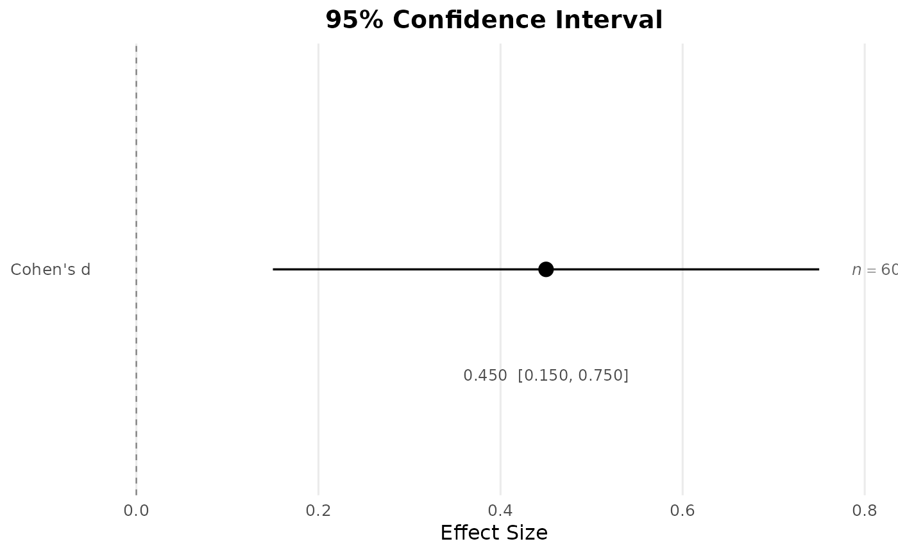
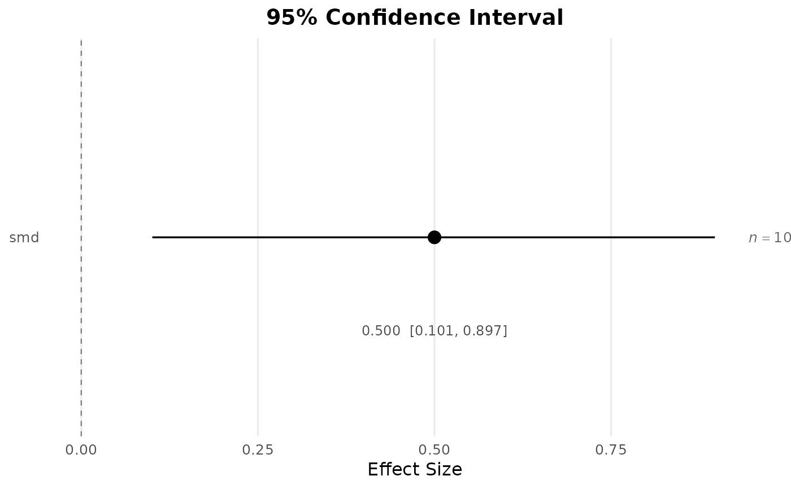
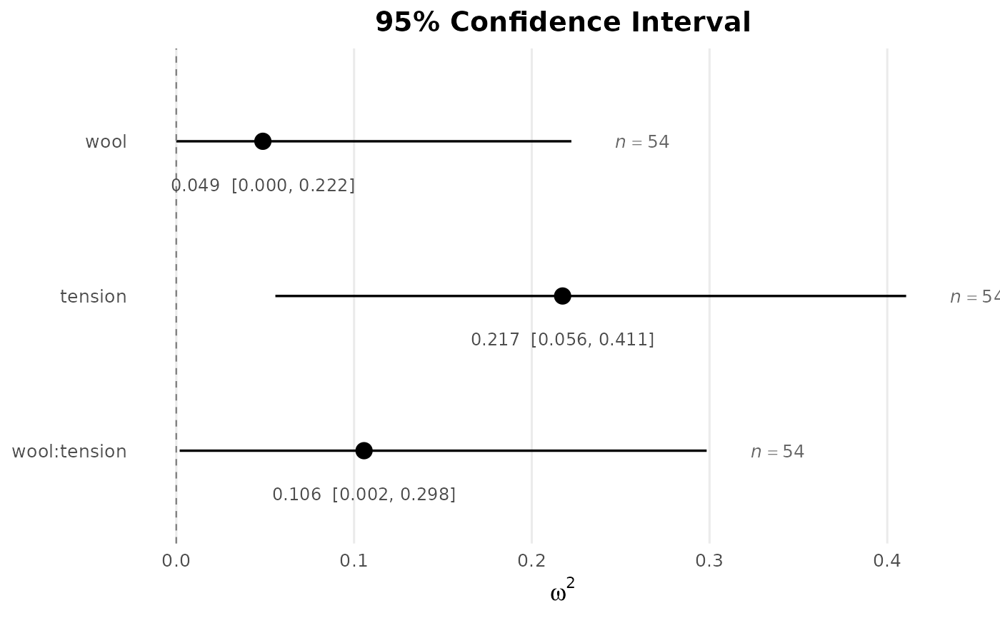

Creates a clean visualization of one or more effect size estimates with their confidence intervals.
Usage
plot_ci(
ci = NULL,
estimate = NULL,
lower = NULL,
upper = NULL,
names = NULL,
n = NULL,
conf_level = 0.95,
show_n = TRUE,
reference_line = NULL,
xlab = "Effect Size",
title = NULL,
palette = "okabe_ito"
)Arguments
- ci
A
data.framefrom an DMARci_*function. When supplied, the function auto-detects the format and extracts the point estimate(s), lower limit(s), and upper limit(s). Explicitestimate,lower, andupperarguments override values parsed fromci.- estimate
Numeric vector of point estimates.
- lower
Numeric vector of lower confidence limits.
- upper
Numeric vector of upper confidence limits.
- names
Optional character vector of labels for each effect.
- n
Optional numeric vector (or scalar) of sample sizes. Recycled to match the number of effects.
- conf_level
Confidence level; used only for the axis label (default
0.95).- show_n
Logical. If
TRUE(the default), sample sizes are annotated beside each estimate.- reference_line
Optional numeric value at which to draw a vertical reference line (e.g.,
0for mean differences,1for ratios).- xlab
Label for the horizontal (effect size) axis. Defaults to
"Effect Size".- title
Optional plot title.
- palette
Character string naming the color palette. The point estimates and interval bars are drawn in the palette's primary color. Defaults to
"okabe_ito", base R's colorblind-safe Okabe-Ito palette;"tableau"is also available.
Details
The function accepts either (a) a data.frame produced by an
DMAR ci_* function (e.g., ci_smd, ci_R2,
ci_omega_squared), or (b) explicit numeric vectors for the
estimate(s), lower bound(s), and upper bound(s).
The function recognizes three DMAR output formats:
- Long term/value with estimate row
Output from
ci_smd, which includes a row for the point estimate (e.g.,term = "smd") in addition to"lower_limit"and"upper_limit".- Long term/value without estimate
Output from
ci_rorci_R2, which contains only"lower_limit"and"upper_limit". Supply the point estimate via theestimateargument.- Wide per-effect format
Output from
ci_omega_squared, which has one row per effect with columns for the point estimate,lower_limit,upper_limit, andN.
Author
Ken Kelley kkelley@nd.edu
Examples
# \donttest{
# From explicit values.
plot_ci(estimate = 0.45, lower = 0.15, upper = 0.75,
names = "Cohen's d", n = 60, reference_line = 0)

# From ci_smd() output.
ci_result <- ci_smd(smd = 0.5, n_1 = 50, n_2 = 50)
plot_ci(ci_result, n = 100, reference_line = 0)

# Multiple effects from ci_omega_squared().
fit <- aov(breaks ~ wool * tension, data = warpbreaks)
omega_result <- ci_omega_squared(fit)
#> Warning: The observed F_value is below the alpha_lower critical value of the central F-distribution; the lower noncentrality limit has been clamped to 0 and the reported 'prob_greater' on the lower_limit row reflects the actual upper-tail probability at lambda = 0.
plot_ci(omega_result, reference_line = 0,
xlab = expression(omega^2))

# }